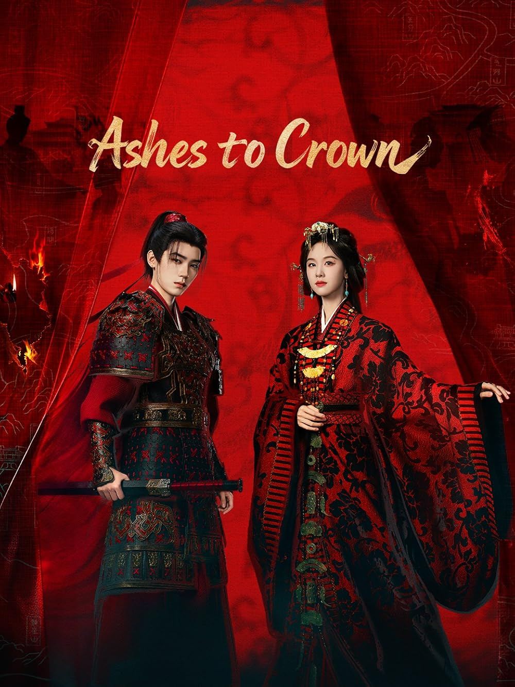

Historical • Political • Romance
Native Title: 楚后
Country: China 🇨🇳
Episodes: 24
Status: Airing
Platform: Youku
Based On: Chu Hou Novel
A determined noblewoman who navigates court politics, family struggles, and power battles.
A loyal guard whose journey transforms him into a respected military leader.
9.1 / 10
Based on early audience reactions and drama community discussions.
Ashes to Crown combines political intrigue, historical storytelling and romance into a highly anticipated production. The strong cast and impressive trailer have already generated significant interest among drama fans.